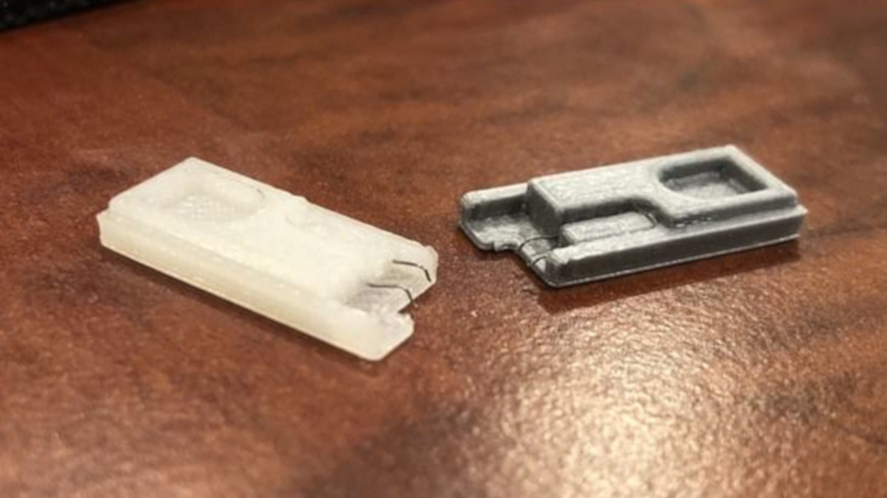
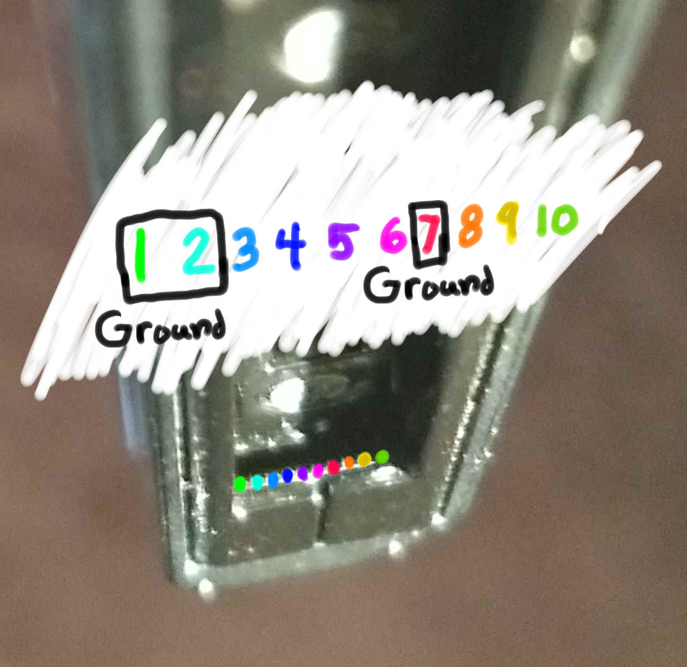
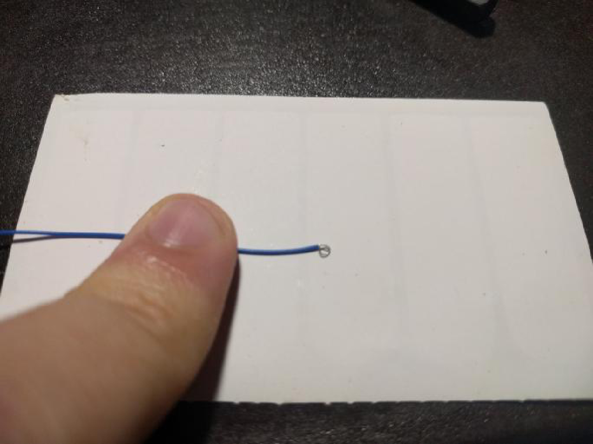
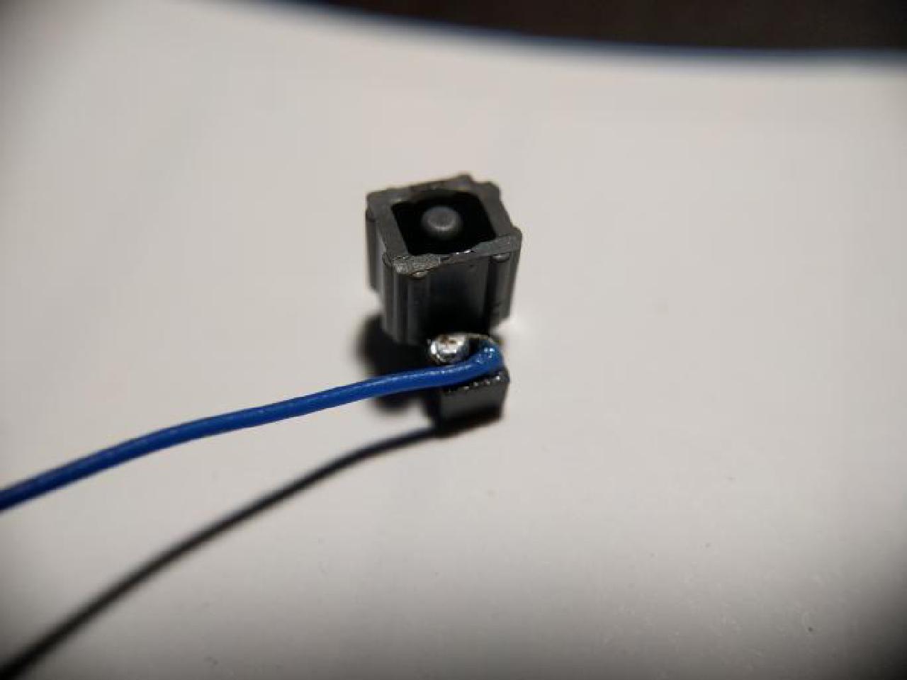
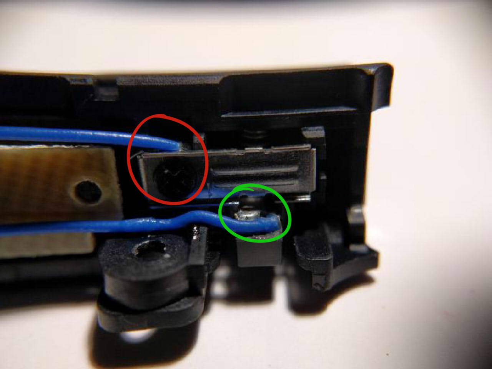

Вход в RCM
Вход в RCM¶
Процессор Tegra X1 в консоли Nintendo Switch имеет Recovery mode (режим восстановления), который сокращённо называется RCM и он не предназначался для использования конечными пользователями. К счастью, благодаря уязвимости fusee-gelee, этот специальный режим, послужит нам для запуска CFW.
Методы входа в RCM могут варьироваться от использования подручных средств, (что не рекомендуется) до недорогих инструментов стоимостью 100-300 рублей, которые можно приобрести на таких площадках, как AliExpress и Ozon. Избегайте использования кусочка фольги или скрепки, так как они могут повредить вашу консоль. Вы также можете рассмотреть возможность напечатать на 3D принтере необходимые инструменты.
Пропатченные консоли
Обратите внимание, что пропатченные консоли могут войти в RCM, но на этих системах невозможно отправить payload. Также имейте в виду, что RCM — это другой режим восстановления, чем тот, к которому можно получить доступ, удерживая кнопки увеличения громкости, уменьшения громкости и питания консоли.
Информация о методах ниже
Порядок методов на этой странице располагается по степени удобства. Самый простой метод, который можно сразу выполнить, — это метод RCM Jig. Самые сложные и продвинутые методы упоминаются в других вкладках и не должны использоваться большинством людей, так как они требуют аннулирования гарантии и/или пайки.
ИСПОЛЬЗОВАНИЕ СКРЕПКИ ИЛИ ФОЛЬГИ МОЖЕТ/БУДЕТ ПОВРЕЖДАТЬ ВАШУ КОНСОЛЬ, НЕ ДЕЛАЙТЕ ЭТО!
Инструкции:¶
- Выключите Switch и замкните контакты на правой рельсе Joy-Con, используя один из методов, перечисленных ниже.
- Удерживая кнопку
Увеличение громкости, нажмите кнопкуВключениеодин раз, продолжая удерживатьУвеличение громкости.- Если на вашем Switch появляется логотип Nintendo и он загружается нормально (или экран был включен и стал чёрным), вы не вошли в RCM и должны попробовать снова. В противном случае, если ваша консоль всё ещё показывает чёрный экран (даже после повторного нажатия кнопки включения), ваш Switch находится в RCM, и вы можете отпустить кнопку
Увеличение громкости.
- Если на вашем Switch появляется логотип Nintendo и он загружается нормально (или экран был включен и стал чёрным), вы не вошли в RCM и должны попробовать снова. В противном случае, если ваша консоль всё ещё показывает чёрный экран (даже после повторного нажатия кнопки включения), ваш Switch находится в RCM, и вы можете отпустить кнопку
- Как только ваш Switch находится в RCM, уберите RCM jig (если применимо) и продолжайте со следующей страницы руководства, нажав на кнопку внизу этой страницы.
Некоторые конструкции jig используют скрепки, унаследовав те же риски, что и использование кусочка фольги / скрепки, и их не следует использовать.
Как только вы успешно вошли в RCM, вы можете убрать jig из рельсы Joy-Con.
Этот метод похож на "кусочек фольги" / "метод скрепки", но в большинстве случаев он более надёжен и безопасен. Jigs удерживают провод на месте, так что правильные контакты (10 и земля) надёжно замыкаются.
RCM jig, изображённый ниже, является моделью, которую мы рекомендуем:¶
Создание собственного RCM Jig
Если вы планируете создать свой собственный jig, на втором изображении показана правильная раскладка правой рельсы Joy-Con на консоли. Убедитесь, что ваш jig НИКОГДА не касается контакта 4. Контакт 4 подаёт 5 вольт питания на Joy-Con и может навсегда повредить рельсу или консоль, если будет замкнут.


Этот метод требует вскрытия правого Joy-Con, что аннулирует его гарантию. Не для слабонервных.
Этот метод предложен пользователем pbanj в Discord. Все фотографии, демонстрирующие выполнение этого метода, были предоставлены им, с дополнительными изображениями от eip618 на Discord.
Цель этого метода — открыть правый Joy-Con настолько, чтобы можно было легко добраться до контактных площадок. Это похоже на предыдущий метод, однако здесь вы будете припаивать провода к контактам 7 и 10 (показано ниже) и подключать их к кнопке "освобождения рельсы" на задней верхней части правого Joy-Con.
Контактные площадки Joy-Con:¶
Чтобы начать этот метод, вам понадобятся два куска провода, каждый из которых нужно обернуть в небольшое кольцо с одного конца.
Ссылка на провода:¶

Затем вам нужно будет взять кольцевой конец одного из проводов и добавить небольшое количество припоя, оставив его в основном плоским (ДЕЛАЙТЕ ЭТО ТОЛЬКО С ОДНИМ ПРОВОДОМ!). Затем приклейте этот провод к точке на кнопке освобождения рельсы, показанной ниже. Убедитесь, что клей не покрывает верхнюю часть припоя/провода, так как это будет точка контакта. Также убедитесь, что оставлено достаточно места для правильной работы кнопки. Попробуйте нажать на кнопку снаружи и наблюдайте её ход, чтобы понять, где и как безопасно приклеить припой.
Кнопка Joy-Con:¶

Кнопка Joy-Con:¶

Первый провод теперь должен быть на месте, как показано зелёным кругом ниже. Второй провод не требует припоя, вместо этого вы будете удерживать его на месте, используя винт, как показано красным кругом на изображении ниже.
Кнопка Joy-Con на месте:¶

При нажатии на кнопку Joy-Con вы должны заметить, что созданная вами контактная точка соприкасается с металлической частью, удерживаемой винтом. Когда все элементы будут на месте, подключите один провод к контакту 7, а другой — к контакту 10 (не важно, какой к какому). После этого вы успешно создадите кнопку RCM на своём Joy-Con. Теперь вам нужно будет удерживать кнопку освобождения Joy-Con при попытке загрузки RCM.
Успешная установка:¶

Этот метод требует вскрытия правого Joy-Con, что аннулирует его гарантию. Не для слабонервных.
Цель этого метода — открыть правый Joy-Con до такой степени, чтобы можно было легко добраться до контактных площадок. Это похоже на предыдущий метод, однако цель заключается в том, чтобы припаять контакты 7 и 10 (показано ниже) с помощью поверхностного резистора 0805 10k. Помимо использования физического переключателя/кнопки, этот метод в настоящее время считается самым безопасным, который включает пайку на площадках.
Контактные площадки Joy-Con:¶
Вот пример от пользователя stuck_pixel с Discord-сервера ReSwitched.
Успешная установка:¶

Этот метод приведёт к тому, что правый Joy-Con будет восприниматься как "отсоединённый", будучи физически подключённым к Switch, и поэтому он не сможет заряжаться. Этот метод может привести к тому, что Joy-Con будет постоянно определяться как беспроводной, если вы обновите прошивку Joy-Con с установленной модификацией. В последнем случае, чтобы это исправить, потребуется открыть Joy-Con и переподключить аккумулятор. Рекомендуется вместо этого припаять контакты 7 и 10 с помощью резистора.
Этот метод требует вскрытия правого Joy-Con, что аннулирует его гарантию. Не для слабонервных.
Цель этого метода — открыть правый Joy-Con до такой степени, чтобы можно было легко добраться до контактных площадок. Это похоже на предыдущий метод, однако цель заключается в том, чтобы припаять контакты 9 и 10 (показано ниже) вместе. Это можно сделать либо с помощью небольшого провода, либо напрямую, замкнув контакты с помощью припоя.
Контактные площадки Joy-Con:¶
Ниже приведён пример от пользователя yami0666 с нашего Discord-сервера.
Успешная пайка:¶

Этот метод приведёт к тому, что правый Joy-Con будет определяться как находящийся в беспроводном режиме, даже будучи подключённым к Switch. Этот метод также может привести к тому, что Joy-Con будет постоянно определяться как беспроводной, если вы обновите прошивку Joy-Con с установленной модификацией. В последнем случае, чтобы это исправить, потребуется открыть Joy-Con и переподключить аккумулятор.
Этот метод требует вскрытия правого Joy-Con, что аннулирует его гарантию. Не для слабонервных.
Цель этого метода — открыть правый Joy-Con до такой степени, чтобы можно было легко добраться до контактных площадок, и использовать тонкий предмет, например нож, чтобы слегка подогнуть контакты 9 и 10 (показаны ниже) вверх и друг к другу, чтобы они соприкасались и замыкались.
Контактные площадки Joy-Con:¶

Вот пример от пользователя sonlen с нашего Discord-сервера.
Изогнутые контакты Joy-Con:¶